北陸での所用ついでに上越の気になるお寺に寄り道シリーズその2。
上越市柿崎の
浄善寺に行ってみる。
ここは当サイト珍寺大道場の姉妹サイトである
日本すきま漫遊記の深草さんからかなり前に教えていただいていた寺院だ。
柿崎とはザックリ言うと柏崎と直江津の丁度中間辺りに位置する。
訪れたのは3月で、道中内陸部はがっつし雪景色だったのでかなり焦ったが、日本海側に出てしまえばほとんど雪がない状態でホッとした。
駅からトボトボと歩いて行くと異様なシルエットの建物が見えてきた。
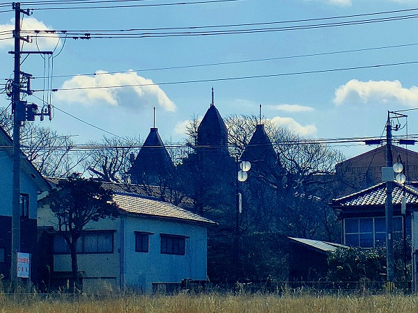
これが浄善寺である。
浄土真宗本願寺派の寺院である。
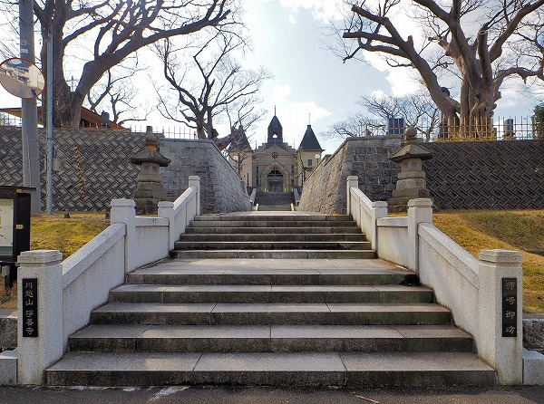
え？これがお寺？
と思われる方も多かろう。
ところがれっきとした仏教寺院なのだ。
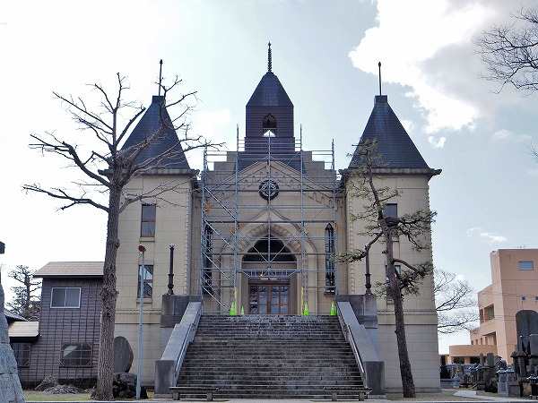
近くに寄ってみる。
左右にそびえる尖塔、
ゴシック風の教会にしか見えない。
中央正面は改装中なのだろうか足場が組まれていた。
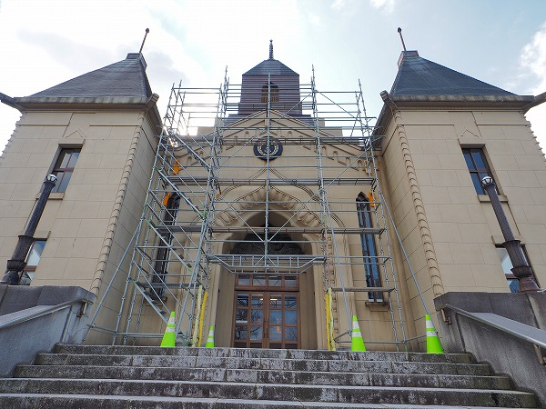
うむむ。
本当に仏教寺院なのだろうか？
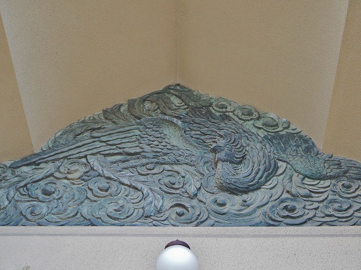
細かい意匠には和風の装飾が見て取れる。
早速中にお邪魔してみる。
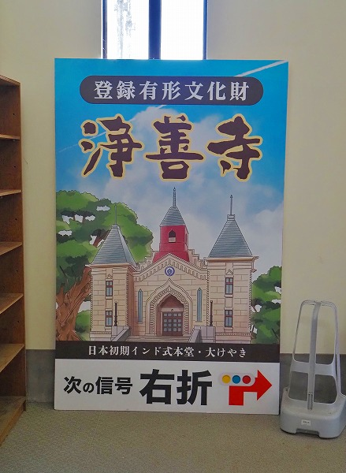
入ってすぐにあった看板。
登録有形文化財、
日本初期インド式本堂、とある。
そうか、これはインド式の建築なのか。
そういわれれば入口のアーチなどはインド風建築に見えなくもない。
でもやっぱりゴシック教会風建築にしか見えないんだけどなあ。
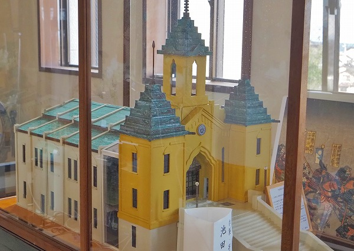
入口近くにあった模型。
3つの尖塔の後に展開する建物。
教会建築の基本形状だ。
中に入ってみる。
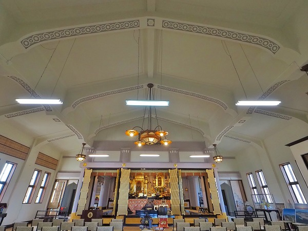
緩やかなヴォールト天井は教会風だが正面の祭壇は明らかに仏教寺院だ。
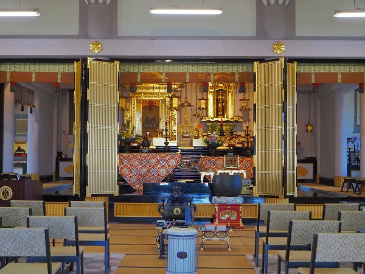
しかも床は畳敷き。そこに椅子が並んでいる。
二重三重に和洋折衷なのである。
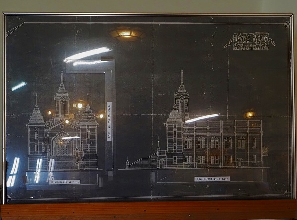
図面が飾られていた。
尖塔の高さ18.5メートル、間口16.3メートル、奥行は24.6メートルである。
この建物が建ったのは
1928（昭和3）年。
インド式どころか洋風寺院どころか鉄筋コンクリート造の寺院すらかなり珍しい時期だったはずである。
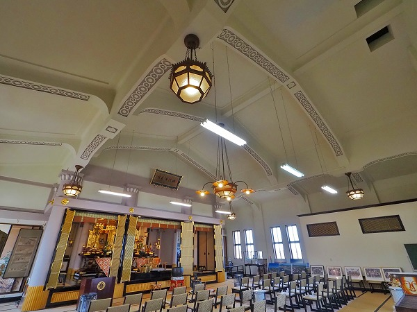
鉄筋コンクリートのアーチ工法ゆえ内部には柱がなく広々としている。
ちなみに畳敷きに椅子を並べるのもこの寺院が最初だと言われている。
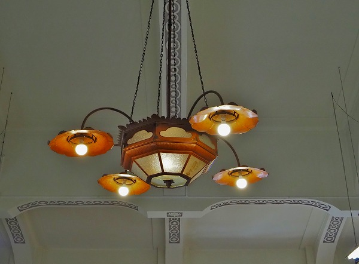
独特の様式の照明。
この建物は
戦前の歌舞伎座を参考にしたという。
この寺の建設の指揮は「あの」
大谷光瑞である。
大谷光瑞とは浄土真宗本願寺派の22世門主であり、明治期に探検隊を組織しアジア各地を調査した奇天烈な人である。
後に余りの散財っぷりに門主を追われるのだが、
昭和の浄土真宗本願寺派の寺院建築に大いに影響を与えた超重要人物なのだ。
その代表作が
築地本願寺や本願寺神戸別院（別名モダン寺）。
この浄善寺はそれに先駆けて大谷光瑞が指揮して建設されたウルトラ貴重な建物なのだ。
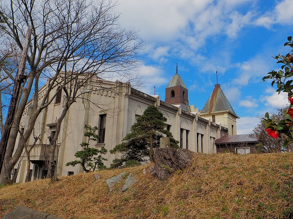
この後、昭和9年に竣工する築地本願寺を設計した
伊藤忠太もこの寺を見に来たという。
つまり
築地本願寺の兄貴分とでもいう存在なのである。
さて。
浄善寺と並んで是非紹介したいお寺がもうひとつある。
それは浄善寺のすぐ隣りにある
浄福寺だ。
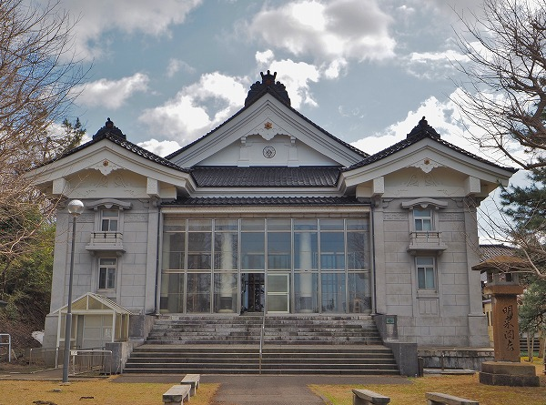
和洋折衷の不思議なお寺なのだ。
このお寺は浄善寺のすぐ東側、道を挟んで隣接する場所にある。
しかも浄善寺と同じく浄土真宗本願寺派。
北陸日本海は真宗が多いとはいえ通りを挟んでこのような寺院が隣り合っているというのは極めて珍しい、と思う。
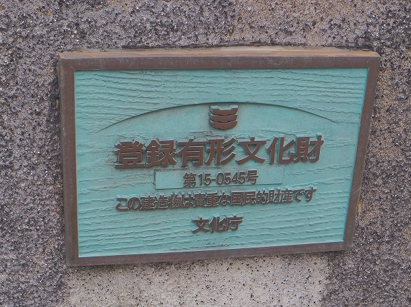
ここも先程の浄善寺も同様に有形文化財に指定されている。
面白いのはこの建物も
戦前の歌舞伎座を参考にしているのだという。
成程、確かに似ているような気がする。
竣工は
1927（昭和2）年。
お隣の浄善寺の前年、という事になる。
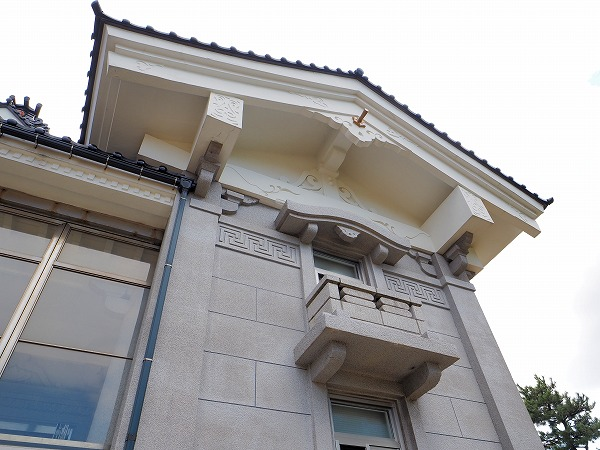
旧歌舞伎座を参考にしたというが、どちらかといえば上野の国立博物館や名古屋市庁舎、愛知県庁舎に代表される
帝冠様式の特徴が色濃く反映されているように思える。
実際、昭和初期の日本建築界は伝統的な西洋建築の要素と先進的な鉄筋コンクリート造建築を習得し、その上で日本的なサムシングを上乗せする時期に到達していたと考えられる。
その結果、
鉄筋コンクリート造の躯体に古典的な西洋建築の様式をベースに瓦屋根の和風テイストをガッチャンコすることで洋の東西の長所を融合させる様式を生み出したのだ。
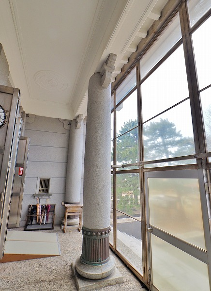
正面にあるのは
エンタシスの柱。
前面はガラス張りになっているが後補のものかもしれない。
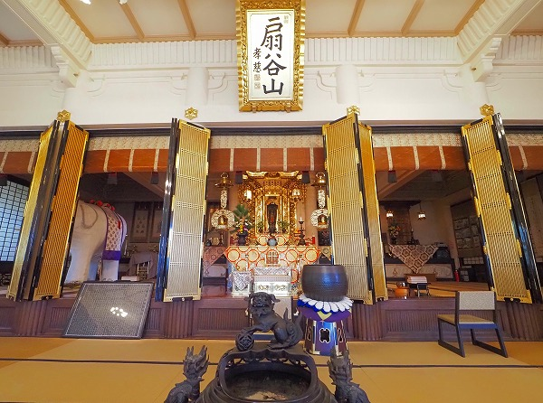
ここもまた畳敷きだった。
色々調べてみたのだが、この寺院と大谷光瑞、あるいは伊藤忠太の関りは特に語られていない。
しかしお隣の浄善寺の建設に大谷光瑞が関与し、しかも伊藤忠太が見学に来たのであれば、この浄福寺とてこの両者と全く無関係という事はあり得まい。
これは私の夢想だが、この寺院もまた建立にあたって大谷光瑞が何か関与しているのではなかろうか、あくまでも想像ですけどね。
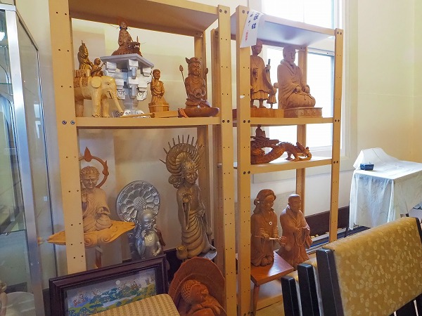
本堂の片隅には数体の仏像が展示されていた。
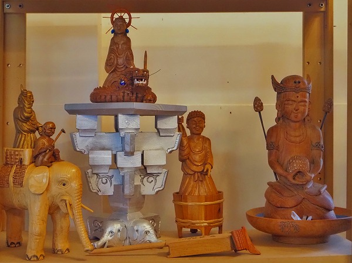
特別展と題されたその仏像群は中々味わい深い仏像だった。
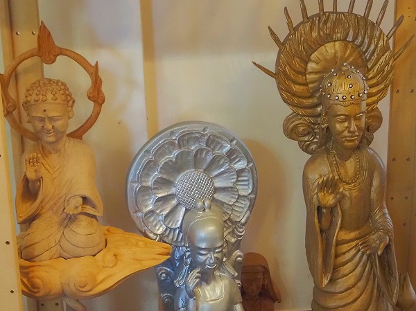
表情が妙にリアルだ。
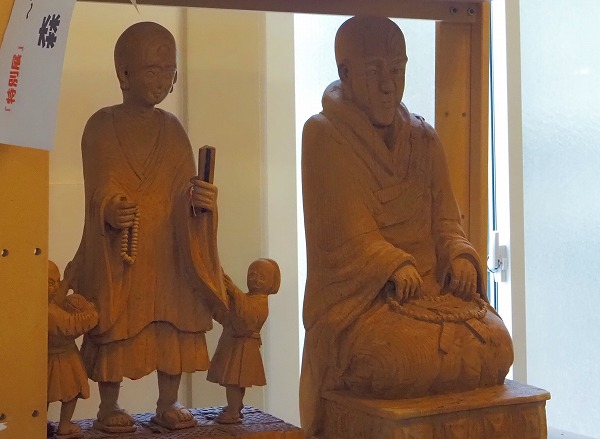
技術的には何ともいえないが深く印象に残るお像だった。
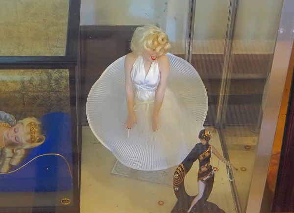
隣りのガラスケースには何故かモンローや
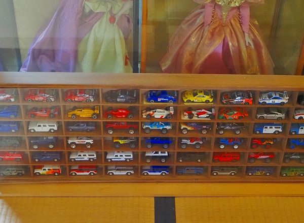
ミニカーのコレクションなども。
この辺の脈絡のなさも個人的には大好きである。
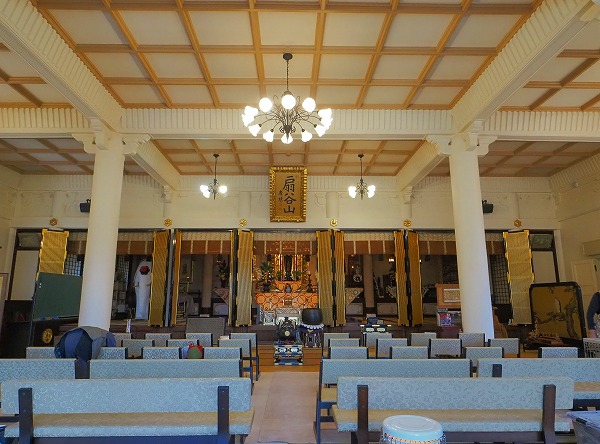
訪問時は丁度集会が終わったタイミングであり、信徒さんが片付けをしている最中であった。
お邪魔様でした。
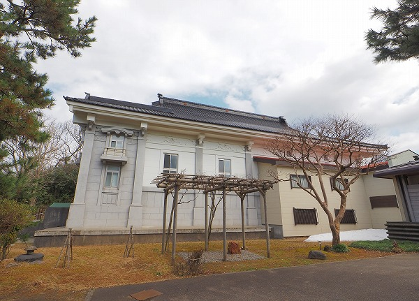
横から見た所。
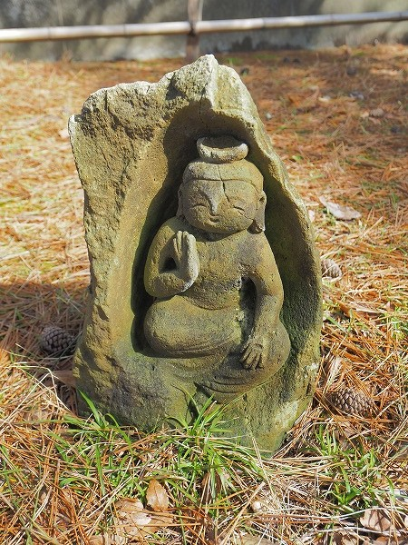
それにしても奇妙なハナシである。
東銀座の歌舞伎座にインスパイアされた寺院が新潟の片田舎（失礼！）に二つも存在し、さらにその寺院を参考に歌舞伎座から500メートルしか離れていない場所に築地本願寺が建立されるという事実。
いわば歌舞伎座の孫筋が新潟経由ですぐ近くの築地に建てられた訳なのだ。
これは
運命なのか必然なのか。
何とも不思議な巡り合わせを感じざるを得ないのである。
ちなみに淨善寺と浄福寺、両方がほぼ同じ時期に建設されたのには理由がある。
それは
明治30（1897）年の柿崎大火でいずれも焼失してしまったからなのである。
そして両寺とも火災に強い建物を志向したのだろう。
そうして出来上がったのがインド式仏堂と帝冠式仏堂だったのだ。
互いに異なるアプローチだったかもしれないが、
耐火と当時の浄土真宗本願寺派の空気が色濃く反映されたそれぞれの最適解が示されたのであろう。
そういう意味では同じ条件下でこれだけ違う解を示した（恐らくお互いにどんな建物を建てるのか、という情報も流れていただろうに）寺院が隣同士に並んでいるというのは実に不思議で興味深い現象だと思うのである。
更に余談になるが昭和初期の鉄筋コンクリート造建築と西洋近代建築と日本の仏教的造形概念の融合といえば思い起こさずにいられないのは
戦前コンクリ大仏の存在だ。
昭和2年から8年頃までの数年間に日本では驚くほどの数のコンクリ大仏が建立された。
そのいずれもが従来の概念を超越した胎内空間を擁する大仏であった。
それはつまり
当時最先端だった鉄筋コンクリート造建築と西洋のモダニズム概念と日本、ひいてはアジアの仏教的観念が高度に昇華したカタチなのではなかろうか。
そう考えると
昭和ヒトケタにこの国では今の我々が想像する以上に壮大な建築的な実験が繰り広げられていたのではなかろうか。
柿崎駅に戻る。
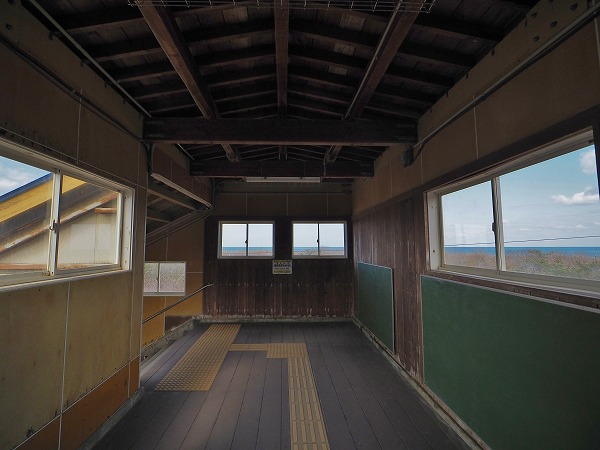
窓の向こうには日本海が見えた。